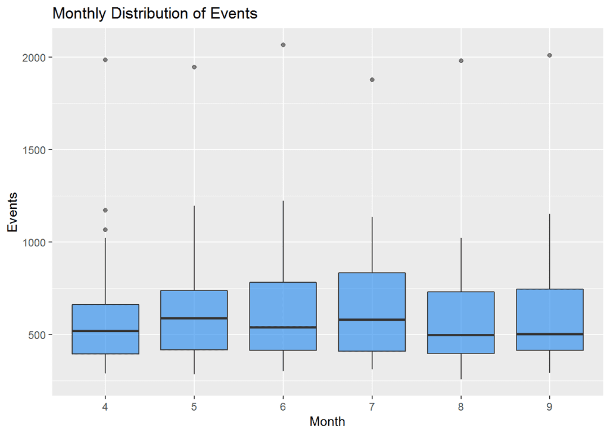

library("RODBC")
#Connection string
RODBC_connection <- odbcDriverConnect(paste('driver={SQL
Server};server=',
Sys.getenv("SERVER"),
';database=',
Sys.getenv("DATABASE"),
';trusted_connection=true', sep = ""))
# for example with a server called "Cliff" and a database called "Richard" your string would be:
# driver = {SQL Server}; server = Cliff; database=Richard; trusted_connection = true')
dt1 <- sqlFetch(channel=RODBC_connection, sqtable = "MyTable")
# Load data from SQL query
dt2 <- sqlQuery(channel = RODBC_connection, query = "select TOP 100 * from MyTable") Getting data into R
One of the things I found most difficult when learning R was getting data from our SQL Servers into R to analyse. It is easy to load csv files, or pull example datasets from packages, but a little more knowledge is required to connect to external databases. I think this is a common problem for my NHS colleagues when learning R and probably for others too. This post is a brief introduction to the two main ways to pull data in to R using {RODBC} and using {dplyr}‘s ’DBI-compliant’ database connections. I’ll be talking about connections with Microsoft SQL Server (over a local network), but this can also extend to other types of database by using different drivers, or other network set-ups using the right authentication.
Where is the data stored?
If you are using SQL Server to store your data, it is written into files on the database server and accessed using SQL scripts in your chosen interface (I use SQL Server Management Studios). Whilst the data are stored on disk on the SQL Server, R stores data in memory (RAM) on your machine. This has the advantage of quick access, but you can easily run out of memory with larger datasets, or processes that build larger matrices (like some types of statistical model). If memory is an issue, you will probably get the error message:
Error: cannot allocate vector of size ....
If you hit this situation, I’d recommend trying the data.table as an alternative to using data.frames. It is much faster, and has a lower memory footprint. Here’s a great blog post about it from Megan Stodel: https://www.meganstodel.com/posts/data-table/
Two common methods
There are two common methods of connection, both of which use Open Database Connectivity (ODBC) drivers:
The {RODBC} package. The DBI system, using {dplyr}, {dbplyr} and {odbc}. Both of these create a connection, using a ‘connection string’ with the details of server/credentials and so on, this can be used to create a connection object, from which we can pull data into R or manipulate it in the database.
A note on security
To prevent publishing our server or database names in this post, I’ve used an alias that goes and looks them up internally. There are a few options for doing this in your own code, but I’ve added them to my ‘.Renviron’ file, as SERVER and DATABASE variables. My code looks them up each time using the Sys.getenv() function that you’ll see in the examples below.
This has meant using the paste() function to concatenate the variables together in the (RODBC) example. You won’t have to do this in your own work if you replace the server and database names directly.
RODBC
This is the simpler of the two interfaces, and uses slightly older code. It can be used to connect to anything that uses Open Database Connectivity (ODBC). I’ll define a connection string to a database server, a database, and a table called ‘MyTable’ that has some dummy data in it. If you haven’t got any of the packages used in this post, you can install them with: install.packages("RODBC") for example.
Quite straightforward to use! In the example above, I specified trusted_connection = true. In a windows environment, this passes your windows credentials to the server. Since we use these for access permissions on our SQL Servers, we can use this method with no issues. You can, instead, specify a username (uid) and a password (pwd): see the help files for more details, using: ?odbcDriverConnect.
You can also use {RODBC} to write back to database tables, choosing whether or not to append your results using the append and safer arguments. Not appending means you will overwrite the table:
sqlSave(channel = RODBC_connection,
dat = dt2,
tablename = "Mytable_version2",
append = FALSE,
safer = FALSE
) There are lots of other functions included with {RODBC} to allow you to see structures and so on. The package vignette is a very helpful place to go for this, along with the help files.
Remember to disconnect at the end of your session:
odbcClose(RODBC_connection) If you do this a lot, you might find Gary Hutson’s recent post, showing how to wrap some of this into a function, a useful addition. Check it out here: http://hutsons-hacks.info/rodbc-helper-function.
DBI dplyr
The {RODBC} interface was simple, quick, and you may not need to consider another approach, but I prefer to use the {tidyverse} functions linked to {dplyr}. These functions are maturing in the last couple of years, and have a few major advantages:
- Work with {tidyverse} functions, including {dplyr} verbs and the pipe
%>%
- Faster than RODBC to import data
- Can be used to work with data in the database, without importing it into R.
The connection string is slightly different, and we require a few more packages to make this work. You need to make sure you have the following installed:
- {dplyr} – to make the tbl and use it, we’ll work with dplyr syntax. = {DBI} – a common Database Interface engine for use in S and R (see: https://cran.r-project.org/web/packages/DBI/vignettes/DBI-1.html)
- {dbplyr} – this add-on package allows translation from {dplyr} to SQL.
- {odbc} – provides the odbc drivers, but you could use the functions below with other drivers instead.
library(dplyr)
library(dbplyr)
library(odbc)
library(DBI)
DBI_Connection <- dbConnect(odbc(),
driver = "SQL Server",
server = Sys.getenv("SERVER"),
database = Sys.getenv("DATABASE")
) Now we can define a table as if it was part of our R workspace, using the connection object and the names of the table in the database. We can then interact with it directly using {dplyr}. glimpse() is a useful function that shows you the column names, datatypes and top few entries:
MyTable <- tbl(DBI_Connection, "MyTable")
glimpse(MyTable)
## Observations: ??
## Variables: 7
## Database: Microsoft SQL Server
## $ id <int> 2, 3, 4, 5, 6, 7, 8, 9, 10, 11, 12, 13, 14, 15, 16,...
## $ Org <chr> "A", "B", "C", "D", "E", "F", "G", "H", "I", "J", "...
## $ year <int> 2015, 2015, 2015, 2015, 2015, 2015, 2015, 2015, 201...
## $ month <int> 4, 4, 4, 4, 4, 4, 4, 4, 4, 4, 4, 4, 4, 4, 4, 4, 4, ...
## $ Category_1 <dbl> 35395, 21126, 9248, 4049, 5323, 16867, 9916, 12404,...
## $ Category_2 <dbl> 39293, 24860, 11031, 5812, 6876, 18475, 12976, 1657...
## $ events <int> 1986, 429, 460, 301, 289, 1172, 446, 756, 663, 874,...
MyTable %>%
filter(year ==2015) %>%
group_by(month) %>%
summarise(AvgEvents = mean(events),
MaxEvents = max(events),
N = n()) %>%
arrange(month)
## # Source: lazy query [?? x 4]
## # Database: Microsoft SQL Server
## # Ordered by: month ## month AvgEvents MaxEvents N
## <int> <int> <int> <int>
## 1 4 624 1986 25
## 2 5 658 1948 25
## 3 6 671 2068 25
## 4 7 669 1879 25
## 5 8 630 1981 25
## 6 9 649 2011 25 {dplyr} can then be used to do fairly complex things in just a few lines. The example below is not very well thought-out, but it takes data from the database into a summary plot in just a few lines. I’m filtering the data for 2015 and passing it directly into {ggplot2}. I’ve set a few options for a box plot, but it’s quite minimal, and our data has remained in the database and not been imported to R.

You can, of course, write an SQL query directly using the dbSendQuery() function. This executes the query on the server-side only, so if you want the results to be returned back to R, you need to use dbFetch() as well. You might need this approach if you are doing fancy queries, or things that are specific to a database environment that don’t yet have translators in {dplyr}.
SomeRecords <- dbFetch(dbSendQuery(DBI_Connection, "Select TOP 100 * from MyTable"))
# or
SomeRecords <- dbSendQuery(DBI_Connection, "Select TOP 100 * from MyTable") %>%
dbFetch()You may not need to write a custom query for everyday use, but you are still likely to need to pull the data from the server into memory in R sometimes. For me, this is often to build models on it, as that isn’t supported in-database. You can use the collect() function for this. For example, using part of the query from earlier as an example:
MyTable_local<- MyTable %>%
filter(year ==2015) %>%
group_by(month) %>%
summarise(AvgEvents = mean(events),
MaxEvents = max(events),
N = n()) %>%
arrange(month) %>%
collect()
print(MyTable_local)
## # A tibble: 6 x 4
## month AvgEvents MaxEvents N
## <int> <int> <int> <int>
## 1 4 624 1986 25
## 2 5 658 1948 25
## 3 6 671 2068 25
## 4 7 669 1879 25
## 5 8 630 1981 25
## 6 9 649 2011 25 You can also write back to a database using the dbWriteTable() function. The following code snippet writes a new table to my current connection, called NewDatabaseTable using the local data.frame called MyTable_local (that we created in the last section). The append option indicates whether to add to an existing table or not, and overwrite is just what it sounds like:
dbWriteTable(DBI_Connection, "NewDatabaseTable", MyTable_local, overwrite = TRUE)Summary
Database connections are common in most analysis and data science settings. R can easily connect to relational databases, reading and writing with either {RODBC} or {dplyr}/{DBI} packages. I prefer the {DBI} route as it is faster, plugs into {dplyr} allowing ‘piping’ between functions, and allows us to work with data whilst it is still on the database server. This post just scratches the surface, but there are many more options for executing procedures, using different schema and so on This post has been targeted at working with Microsoft SQL Server, but these processes will work well with other databases by switching to the right drivers.
This blog was written by Chris Mainey, Intelligence Analyst from the Health Informatics team at University Hospitals Birmingham NHS Foundation Trust.
The blog was originally posted here: https://mainard.co.uk/post/database-connections-in-r/
This blog has been formatted to remove Latin Abbreviations and edited for NHS-R Style.